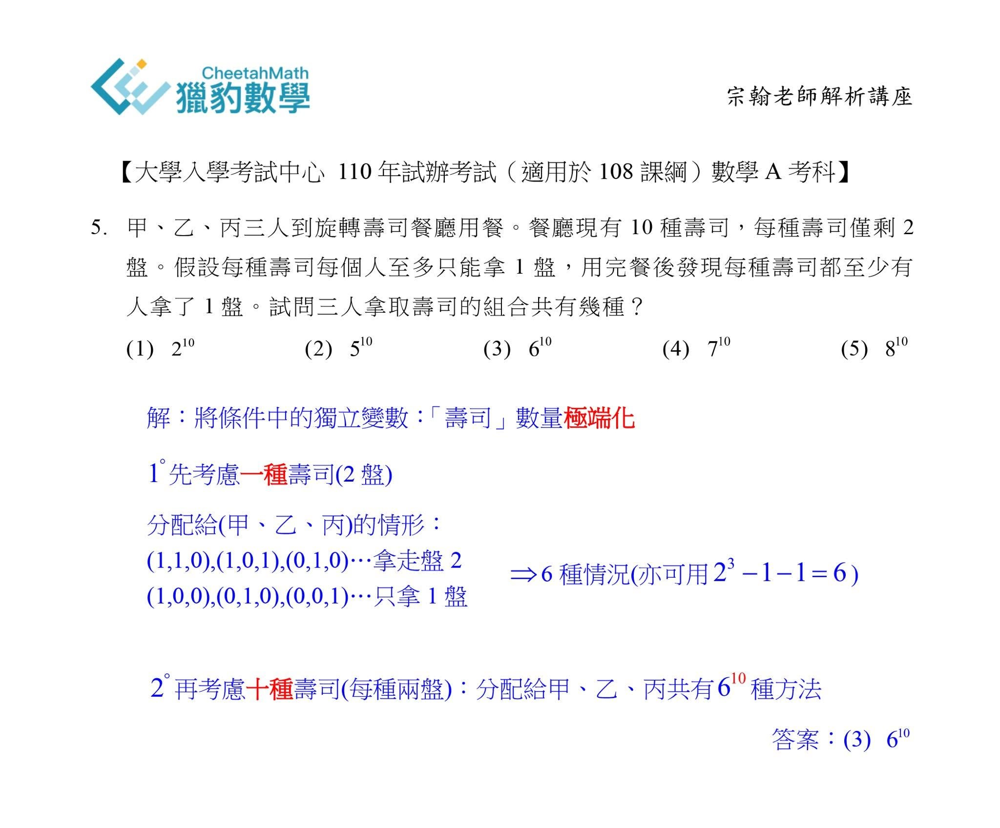
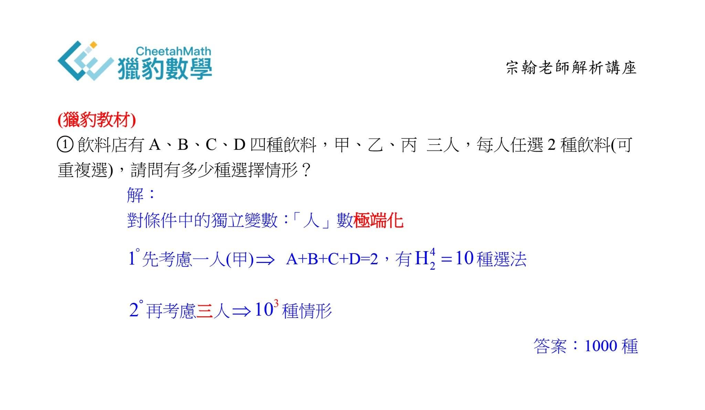
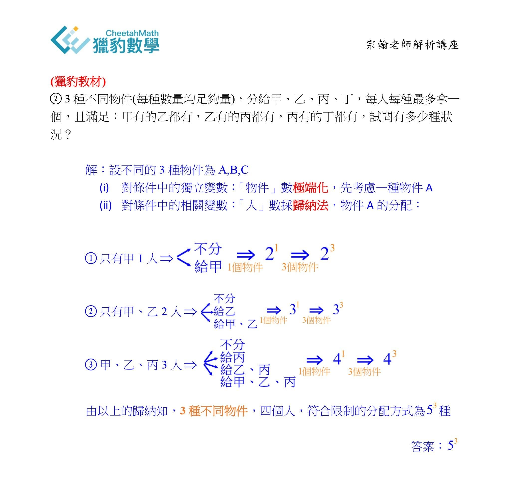

解題高手的錦囊妙計
—你在補習班學不到的數學方法（上）
前兩週（10/23）我在獵豹『大考中心試辦考試 數學試題解析』直播中提到，許多同學花了大量時間補習、做參考書，卻在這次試辦考試中慘遭挫敗！
以「排列組合」為例，同學們除了學校的課程，在補習班前後至少上了30小時以上的課（高一下、高三上），做了幾百題的練習！但是試卷上的一道「排組典型題」（第五題）卻讓無數學子心碎，不但打擊了他們的信心，甚至懷疑投入那麼多時間學習數學的意義為何？！
而且這次的兩道關鍵題並不如以往放在試卷的最後，而是高掛在第5題與第12題，解題的困擾大大影響了後續考試的心情！所以我常提醒同學們在大考中，表現是否穩定常取決於試卷上的『壓軸題』，尤其是對那些以頂尖科系為目標的同學！
我在直播中提到了造成同學們在考場中表現不穩定的原因，也給出了建議。歸根結底，便是絕大多數的同學們，從小在補習班（或自學）接受的數學解題教育是所謂的『短程轉移訓練』。
傳統補教老師的教學方式都是針對特定的題型給予一些解題公式，然後使用這些公式化的步驟快速有效地解決一堆類似題型，讓學生驚喜之餘也趨之若鶩。
而坊間許多從小學開始的，以短時間考試、快速解題、制式考古題、唯一正確答案為基調的「數學競賽」，更讓家長與學生對於以「立桿見影」的公式化教學、機械式訓練、大量刷題的學習模式崇拜不已！
但這些解題技巧教學與學習方式，終究無助於提升真正的數學分析能力與觀念，更嚴重扭曲了數學學習的意義！
事實上完整的數學學習絕不是只有「解題訓練」，它包含了知識體系的建立、研究探索與方法、提問、解題…
當然『解題』對數學學習者是很重要的一環，也因為它的檢測方式最容易，因此成了升學最重要的關鍵能力，長期浸淫在『短程轉移』式的教學與訓練看似收效快速，實則短視近利，是害處極大的學習方式。
當問題的變化度增加，缺乏「科學方法」與「專家思維模式」的短程轉移訓練便難以應付；遇到沒見過的新題型，套路式的公式化解題訓練更完全派不上用場！
而一味強調『快速與正確』的解題訓練，則是『彈性與創意』的殺手！『科學方法、專家模式、彈性、創意』這些都是數學教育中最重要、最寶貴、最有意義，也是長遠來看最有實用價值的！
以試辦考卷上的第五題為例，若受過「專家模式」訓練（獵豹數學的解題教學重點），採取「極端化」、「歸納法」，幾乎是垂手可得的囊中物！（我在直播中示範了方法，見下圖）
獵豹Kevin老師也提供示範教學
https://youtu.be/z4YStMNf4pk


